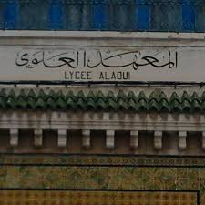

Mes études
-
Go My Code |
Novembre Jusqu’à présent
Formation de développeur FullStack JS
Développement web front-end et back-end -
Security Sourcing & Training Tunisie |
Avril 2017
Formation accélérée sur les produits se sécurité
électronique « HikVision, Paradox, ZKSoftware… » -
Institut supérieur des études technologie de Rades |
Du Septembre 2008 Au Juin 2011
Licence Appliquée en Technologie de l’Informatique
« Parcours : Maintenance des Systèmes Informatique » -

Lycée Alaouia |
Juin 2008
Bac En Section Mathématique «Session Principale»
 Anglais : Compréhension Courante
Anglais : Compréhension Courante